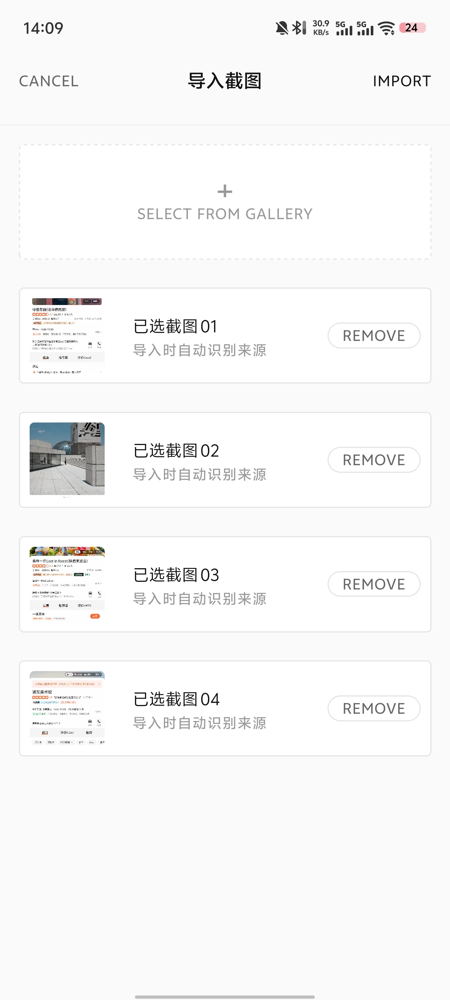
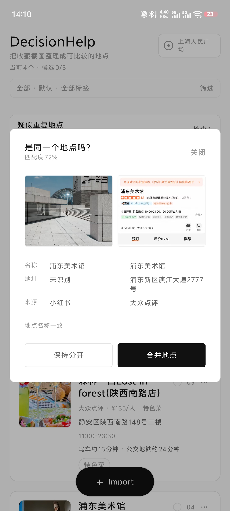
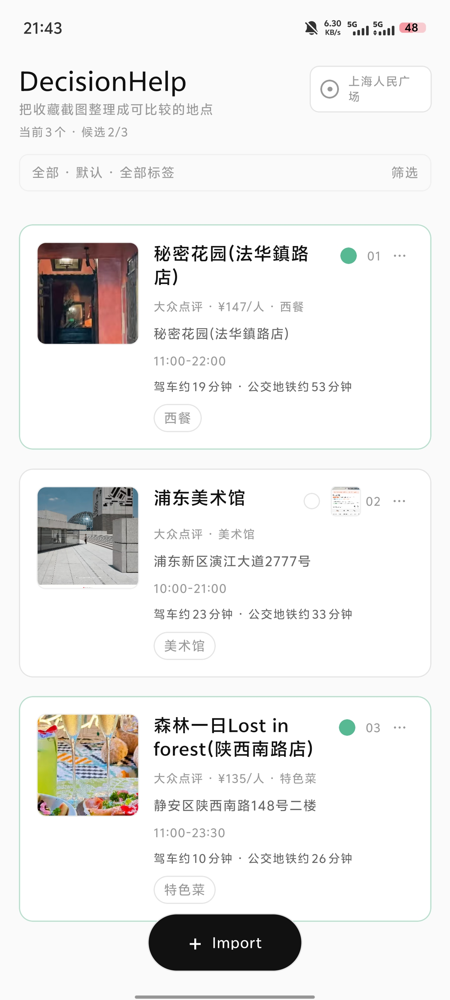

低成本输入
用户能否直接使用已有截图，而不是重新手动录入收藏？
把收藏截图，
变成真正可比较的地点候选。
在一次真实选址任务中，我导入了 4 张来自小红书和大众点评的收藏截图。系统识别来源与地点信息、提示并合并重复地点，最终生成 3 张包含营业时间与出行时长的候选卡片，并缩小到 2 个候选。
演示覆盖批量导入、OCR 与字段解析、重复地点确认、同一起点的出行时间、候选标记和地图跳转。它证明的是核心任务链路可以运行，而不是识别已经适用于所有内容。
出行时间根据录制时的实时路线估算，结果会随路况变化。
准备周末出行或选择餐厅时，我已经在小红书和大众点评收藏了足够多的候选。真正开始选择后，仍需要反复确认地址、人均、营业时间和路程。
不同平台提供的信息各有侧重：小红书更接近推荐理由和体验，大众点评包含较完整的商户信息，地图才能回答“从这里过去要多久”。这些信息没有进入同一个比较界面。
现有产品持续帮助用户发现更多地点，但收藏不会自动变成决定。问题不是候选太少，而是用户无法低成本地整理已有内容，再逐步删减。
收藏解决的是 FOMO，比较才解决选择。
这一轮不验证推荐算法，也不试图一次覆盖所有截图版式，而是回答三个更基础的问题。
用户能否直接使用已有截图，而不是重新手动录入收藏？
不同来源、不完整的内容，能否形成可编辑的地点卡片？
卡片能否支持去重、比较、缩减候选并发起导航？
流程没有要求 AI 一次给出完美答案，而是把自动提取、用户确认和后续行动连接起来。

保留用户已有的保存习惯，不要求迁移收藏夹。

系统展示两侧信息与匹配理由，不直接替用户决定。

地址、营业时间和两种出行方式在同屏卡片中完成初步比较。
截图已经是用户保存和分享信息的自然方式，也不依赖平台开放收藏接口。代价是信息不完整，因此产品必须允许缺失、修正和回溯。
在这个任务里，先得到一个可编辑候选比一次识别全部字段更重要。OCR 或解析失败时仍生成卡片，低置信字段可以留空或由用户补全。
大众点评页面结构相对稳定，规则解析更快且可回归验证；小红书长文本、多地点笔记和模糊描述，才是后续 LLM 应介入的部分。
同名门店可能属于不同分店。系统负责计算相似度、展示字段差异和来源，最终由用户确认，在效率和控制权之间保持平衡。
AI 输出不应该只有“成功”和“失败”。DecisionHelp 记录字段来源与置信度，并为不同状态提供对应的用户动作。
小红书多地点内容容易产生错误归属。继续堆叠脆弱规则的收益有限，因此当前聚焦单地点线索，后续只对低置信和多地点内容引入 LLM。
同一个地点在两个平台上的信息侧重不同。合并时优先使用大众点评的地址、时间等事实字段，同时保留小红书的推荐理由和原始截图。
测试中发现仅使用地址文本会导致路线时间漂移，因此保留地图 POI 标识，并采用与高德默认驾车策略更接近的路线接口；地图详情仍交给外部 App。
这次原型让我确认：AI 产品的交付不是“调用模型得到答案”，而是让不确定结果可以被理解、修正和继续使用。